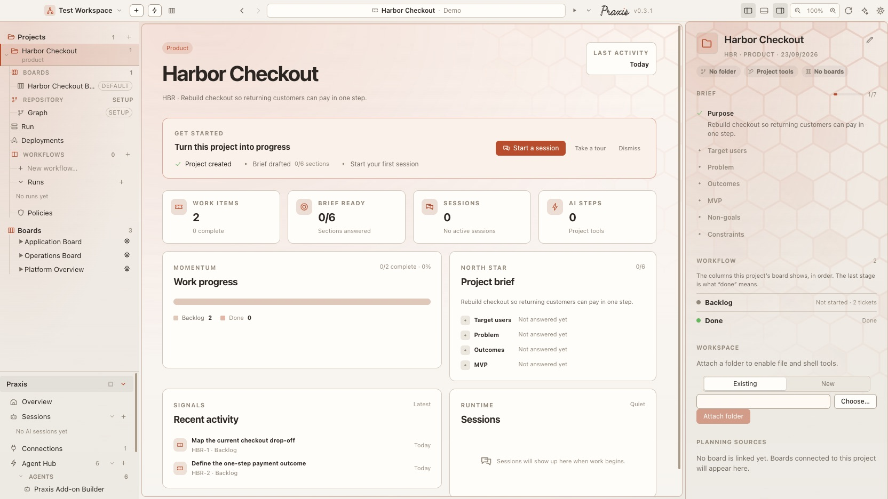
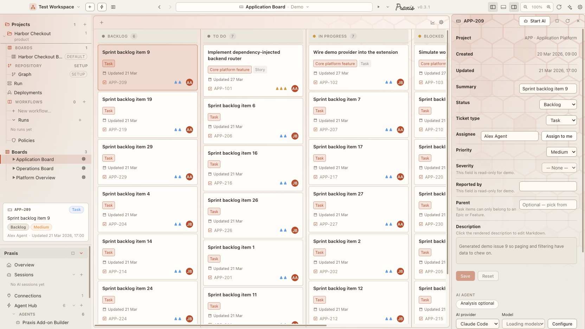

FX-BF-008 · Praxis desktop
Selecting a project used to open a second navigation panel painted on an opaque slab. It now opens a compact, theme-aware project-details inspector; ticket details get the same treatment; and any board whose surface material hurts legibility can switch to a plain background from its own settings. Removing boards and starting from an empty workspace are handled where the user already looks.
Where it stands now · 23 Sep 2026
The right pane's project details and ticket details, as shipped, on the default Parchment surface.


Screenshots from Praxis desktop v0.3.1 (today's main) · the rest of this page is the original write-up, kept as it was. New: Praxis on Your Phone.
Project details
The right pane's ProjectHome was a full-width card layout
squeezed into a narrow column, with its own opaque background and a
“retained PROJECT.md” banner that only ever
appeared here. It is now a stack of borderless, transparent sections that
inherit whatever theme and surface-pack material the pane behind them
paints.
KEY · TYPE · created, and Edit as a pencil icon in the top-right that swaps to Cancel / Save.Git repo / No repo / No folder), default tool mode, linked-board count.filled / total completion meter over a checklist of every field; a check and the value when filled, a muted label when empty. Edit mode expands to the full form.--bg card · bordered panels · “Open plans board” button · text “Edit” link · retained-file noticeTicket details
.detail-panel painted a solid --bg fill over the
themed pane. It is now transparent, so the surface pack—texture,
watermark, tint—shows through behind the ticket fields, matching the
project-details view. The expanded reading mode keeps its own solid fill so
long descriptions stay legible.
Board appearance
A strong surface material can make dense columns hard to scan. Board settings gains an Appearance section with a Plain background toggle. When on, that board's pane drops the material—texture, watermark, tint, glass, accent glow—and sits on a flat elevated fill. The colour theme is untouched.
BoardColumnPreferences.plainSurface in core, persisted per board and restored on relaunch..board-shell with data-plain-surface; .pane-main:has(…) neutralises the surface layers.Board lifecycle
The trash control on the sidebar Boards list now shows for every connection-backed board, not only plan boards. Demo boards have no connection and stay put. “Remove” means different things per backend, so the action is routed:
| Board backend | Action | Effect |
|---|---|---|
| User workspace | userWorkspace.deleteBoard | Drops just that board; the connection keeps its others. |
| Live folder | connection.remove | The connection is that one board, so it goes too. |
| Jira / GitLab | connection.removeTrackedBoard | Untracked from a shared connection; nothing remote is deleted. |
Empty state
When the workspace has no boards and none is selected, the centre pane showed the AI session composer—which can do nothing without a board. It now shows a No boards state with a Create board button that opens the Connections screen.